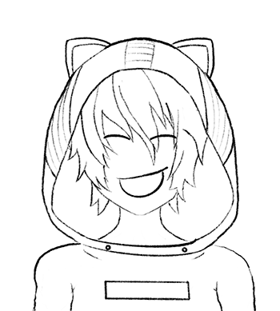

Expressões faciais
Dê uma olhada nessas expressões faciais e tente usá-las nos seus desenhos.

Para fazer com que seu personagem pareça estar apaixonado, substitua os olhos por dois corações. Para dar um efeito mais interessante você pode adicionar três ou mais corações.

Na expressão feliz do anime use duas linhas curvas grossas para os olhos e uma boca larga para criar um rosto feliz e risonho.

Uma expressão facial irritada pode ser feita apontando as sobrancelhas para baixo, em direção ao centro. Para os olhos use uma linha espessa com um semi-círculo por baixo. A boca fica levemente curvada.